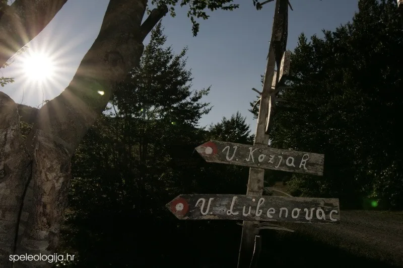

Jama Patkov gušt, Sjeverni Velebit
Jamu je 2. kolovoza 1997. godine prilikom rekognosciranja terena pronašao član Speleološkog odsjeka Velebit Damir Lacković. Jama je istražena do dubine -553 m, te je i dvadeset i tri godine nakon otkrića treća po…

Sažetak
Jama Patkov gušt otkrivena je i istražena tijekom speleološkog logora na Sjevernom Velebitu (Veliki Lubenovac) u razdoblju od 26. srpnja do 17. kolovoza 1997. godine u organizaciji Speleološkog odsjeka Planinarskog društva Sveučilišta Velebit iz Zagreba. Ulaz u jamu pronašao je 2. kolovoza 1997. godine prilikom rekognosciranja terena član Speleološkog odsjeka Velebit Damir Lacković. Jama je istražena do dubine -553 m, te je i dvadeset i tri godine nakon otkrića treća po veličini jamska vertikala na svijetu. http://www.caverbob.com/pit.htm
POLOŽAJ I PRISTUP
Jama se nalazi u strogom prirodnom rezervatu Hajdučki i Rožanski kukovi na sjevernom Velebitu, 150 metara sjeverno od Gornjeg kuka. Pristup objektu najlakši je s Velikog Lubenovca gdje se može postaviti bazni logor. Jama se nalazi u vrletnom terenu gdje ne postoje planinarske staze i teško je preciznije opisati put do jame te je zbog toga potrebno kontaktirati istraživače.
MORFOLOGIJA JAME
Jama Patkov gušt duboka je 553 m. Ono što ju izdvaja među speleološkim objektima je vertikala koja se pruža od ulaza do dna, zaslužna što se Patkov gušt nalazi na drugom mjestu popisa jama s najvećim vertikalama svijeta (u vrijeme otkrića pa do 2016, op. ad.). Jama je dobila ime u čast speleologu Zoranu Stipetiću - Patku, koji je 1994. godine ronio u sifonu na dnu Lukine jame.
[caption id="attachment_1852" align="alignleft" width="182"] Zoran Stipetić - Patak[/caption]Vrtača u čijem se zapadnom dijelu nalazi otvor jame nepravilnog je oblika, izdužena u smjeru S-J, dimenzija oko 100 x 75 m. Sam otvor jame velik je oko 65 x 30 m. U jamu se ulazi sa zapadne strane otvora, gdje se u maloj depresiji nalaze veliki kameni blokovi. Na rubu otvora nalazi se markantno stablo smreke. Stijena je krušljiva, što predstavlja veliku opasnost za speleologe u nižim dijelovima jame. Na dubini od 65 m nalazi se ledena kosina kojom se spušta ispod prvog ledenog čepa, debljine oko 15 m. Jama se i dalje preko snijega i leda spušta do dubine od 105 m, gdje je prolaz u ledu dimenzija 2 x 1,5 m. To suženje, kroz koje 2000. godine nije bilo moguće proći zbog velike količine snijega i leda, najuže je mjesto u jami. Do ovog mjesta dopire dnevna svjetlost, a zbog topljenja leda tu počinje i jako kapanje vode koje se kasnije pojačava, pa voda curi do samog dna jame. Nakon 130 m dubine jama se širi i približno istog profila spušta sve do dna. Stijene su potpuno ili djelomično prekrivene ledenom prevlakom sve do 300 m dubine, pa njeno odlamanje predstavlja stalnu opasnost. Na dubini od 465 m u stijeni se nalazi uska galerija na kojoj se može sigurno stajati. Jama završava dvoranom dimenzija 40 x 30 m. Ispod vertikale nalazi se veća količina snijega. Na sjevernom dijelu dvorane nalazi se najniža točka objekta - mali blatni odvojak u kojem se voda procjeđuje između kamenja i blata (Bakšić 1997; Bakšić 1998).
KAKO JE OTKRIVENA JAMA PATKOV GUŠT?
U razdoblju od 26. srpnja do 17. kolovoza 1997. godine Speleološki odsjek Planinarskog društva Sveučilišta "Velebit" iz Zagreba imao je, već tradicionalno, speleološki logor na sjevernom Velebitu (Veliki Lubenovac). Tijekom tri tjedna logora okupilo se 30 speleologa koji su sudjelovali u rekognosciranju terena i istraživanju jama. Nakon 9 dana hodanja i istraživanja po vrletnom terenu Hajdučkih i Rožanskih kukova sreća nam se osmjehnula. Drugog dana kolovoza ekipa koju je predvodio Damir Lacković otišla je istraživati jame pronađene nekoliko dana ranije na terenu oko Gornjeg kuka. Tom su prilikom pronašli još nekoliko novih otvora jama, a pažnju im je privukao impozantan ulaz u jamu kasnije nazvanu Patkov gušt. Jamu Patkov gušt istraživalo je 12 speleologa, uz logističku potporu ostalih sudionika logora. Istraživanje, odnosno napredovanje u dubinu, topografsko snimanje objekta te raspremanje, obavljeno je u 8 radnih dana. Interesantno je spomenuti da je posljednjeg dana istraživanja na dno spušteno suvišnih 300 metara užeta jer se prethodnog dana zaključilo da je dubina puno veća. Razlog tome je veliki prostor na dnu i jeka koja onemogućava procjenu dubine bacanjem kamena. Važno je spomenuti da smo prilikom istraživanja ove jame imali neugodnih iskustava s ledom koji se uslijed topljenja odlamao i padao u dubinu, pa je tako pri zadnjem istraživanju ledena lavina pala na četvoricu speleologa koji su bili na užetu jedan ispod drugog raspoređeni na dubini od -330 do -480 m. Prava je sreća što se radilo o manjoj količini rastresitog leda pa je sve dobro prošlo. Na dno se spustilo četvero speleologa Damir Lacković, Darko Troha, Ana Sutlović i Darko Bakšić. Zbog opasnosti od obrušavanja leda jama nije bila pogodna za posjet većeg broja speleologa, pa se odmah započelo s njezinim raspremanjem. Najpogodnije vrijeme za posjet ovoj jami je u zimskim mjesecima ako nema puno snijega zbog kojeg bi pristup i transport opreme bio znatno otežan.
KRONOLOGIJA ISTRAŽIVANJA Kada je 1993. godine na području strogog prirodnog rezervata Hajdučki i Rožanski kukovi (sjeverni Velebit) istražena Lukina jama do dubine od -1355 m postalo je jasno kakve mogućnosti za speleološka istraživanja pruža ovaj teren. Zbog čega se ranije nije počelo sa sustavnim istraživanjima na sjevernom Velebitu teško je objasniti obzirom da je u prošlosti u više navrata bilo speleoloških akcija. Prva takva istraživačka akcija bila je još 1929. godine kada su se Ante Premužić, šumarski inženjer, Ivan Krajač pravnik (strastveni planinari, alpinisti i speleolozi) i Marko Vukelić spustili u jamu Varnjaču u Rožanskim kukovima. Tom su prilikom ušli u još dvije jame (jama Crikvena i Hajdučka špilja). Novija istraživanja, nastavljena tek 1961. godine u organizaciji Speleološkog društva Hrvatske, obavljena su za potrebe vojske, pa o tim istraživanjima na žalost ne postoje podaci osim naznake da je istraženo 8 jama. Početkom sedamdesetih godina na ovom su području istraživali članovi Speleološkog odsjeka Planinarskog društva "Željezničar" iz Zagreba kada je istraženo nekoliko manjih objekata i Ledena jama u Lomskoj dulibi do ledenog čepa na dubini od 57 m. Početkom osamdesetih članovi Speleološkog društva "Ursus spelaeus" istražili su 12 jama, od kojih je najdublja imala -143 m. Tek kada su 1990. godine slovački speleolozi došli na Velebit, odnosno kada su 1992. obavijestili hrvatske kolege o svojim istraživačkim akcijama i pronađenim perspektivnim ulazima jama, interes za ovo područje naglo je porastao. Godinu dana kasnije napravljen je speleološki logor na kojem je istražena Lukina jama, a nakon tog otkrića svake se godine redaju vrijedni istraživački rezultati u zajedničkim ili odvojenim akcijama hrvatskih i slovačkih speleologa. Tako je: 1993. godine istražena Ledena jama u Lomskoj dulibi do -451 m, 1994. godine povećana je dubina Lukine jame pronalaskom višeg ulaza, te rojenjem sifona na dnu jame (Jamski sustav Lukina jama - Trojama -1392 m), 1995. godine obavljena su biološka istraživanja u Lukinoj jami kao i fotografiranje, te je istražena Slovačka jama do -516 m, 1996. godine nastavljeno je istraživanje Slovačke jame gdje je dosegnuta dubina od -1000 m, a dubina Ledene jame u Lomskoj dulibi povećana je na -514 m, 1997. godine istražena je jama Patkov gušt duboka -553 m - dugo vremena bila je druga, a danas, dvadeset i tri godine poslije po veličini treća najveća vertikala na svijetu. ---------------------------------------------------------------------------------
PATKOV GUŠT
Lokacija: Sjeverni Velebit, Hrvatska
Dubina: -553 m
Duljina: 40 m
Nadmorska visina ulaza: 1,450 m
Duljina najveće vertikale: 553 m
Istražili: SO Velebit, SK HAD
Topografski snimili: Darko Bakšić, Damir Lacković, Ljiljana Novosel
Mjerili: Ivančica Zovko, Ana Bakšić, Nataša Josipović, Darko Troha, Mladen Novosel, Ana Čop
DNEVNIK ISTRAŽIVANJA
2. kolovoz 1997. subota Damir Lacković se navečer spustio 70 m u jamu s ogromnim ulazom koja ide dalje. 3. kolovoz 1997. nedjelja Damir, Mladen, AnaČ, Ljiljana, Nataša, Ivana, Grga i Goga nastavili su s istraživanjem jame. Damir se spustio do 180 m i jama ide dalje, a do 120 m spustili su se Ljiljana, AnaČ i Mladen. 4. kolovoz 1997. ponedjeljak Damir i Sinus postavljaju jamu od oko 160 od 370 m, ostaju bez užeta, a jama ide dalje. Ljiljana i Ivančica crtaju. Radno ime jame je Highway to hell. 5. kolovoz 1997. utorak Alfica, Roni i Štele raspremaju Divokozinu katedralu, a Ana i Ivan raspremaju SOV-HAD 34 zbog užeta koja trebaju u najperspektivnijoj jami SOV 26 (Patkov Gušt). 6. kolovoz 1997. srijeda Zbog kiše se odgađa ulazak u SOV 26, ali se priprema užad. Dan je odmora. Većina odlazi na Zavižan te u Senj po hranu i benzin. 7. kolovoz 1997. četvrtak Sinus, Troha, Bakša, Ivančica, Ivan, Ljiljana, Nataša i Jagoda po oblačnom vremenu odlaze do Jame SOV 26 (sada radnog imena Jama za Patka). Troha i Sinus postavljaju jamu do oko 500 m dubine, a još nisu na dnu. Za njima su Ivančica i Bakša crtali do dubine od 210 m, odnosno do Purećeg skoka. Ljiljana i Nataša radile su poligoni vlak oko ulazne vrtače. 8. kolovoz 1997. petak Dan odmora uz sušenje odjeće i odlazak u Sv. Juraj radi punjenja akumulatora, kupanja i kupnje hrane. Prihvaćen je Damirov prijedlog za naziv jame SOV 26: Patkov gušt 9. kolovoz 1997. subota Damir, Troha, Ana i Bakša ulaze u jamu "Patkov gušt", silaze na dno na 553 m i crtaju. To je sada najveća vertikala u Hrvatskoj, druga po duljini na svijetu. Pri spuštanju se odlamao led u višim dijelovima jame, ali srećom nitko nije bio ozbiljnije povrijeđen. Izvadili su višak užeta i opreme te raspremili jamu 100 m od dna. Ljiljana i Nataša dovršile su nacrt ulazne vrtače, te zajedno s Vesnom, Markom, Šimcem, Ivančicom, Denisom, Deanom, Ana-Katarinom i Ronijem rekognosciraju jame u okolici i označuju ih s brojevima od 28 do 42. Marko uz pomoć GPS-a određuje koordinate ulaza. Na kraju spuštaju opremu u logor koja je izvađena iz Patkovog gušta. 10. kolovoz 1997. nedjelja Vedran i Ivan raspremili su Patkov gušt do dubine od 120 m. 11. kolovoz 1997. ponedjeljak Sinus, Troha i Jagoda raspremili su Patkov gušt, a Grga, Ivica, Ivana, Roni, Tomo i Vesna pomogli su donijeti opremu u logor. [caption id="attachment_3852" align="alignnone" width="1010"] Patkov gušt, foto: Vesna Troha[/caption]REZULTATI ISTRAŽIVANJA U razdoblju od 26. srpnja do 17. kolovoza 1997. godine Speleološki odsjek PDS "Velebit" imao je logor na Lubenovcu (sjeverni Velebit). Tijekom prva dva tjedna vođa logora bio je Darko Bakšić, a zadnji tjedan Siniša Rešetar. U ta tri tjedna na speleološkom logoru istraživalo je 30 Velebitaša i jedan član Speleološkog kluba "Had" iz Poreča. Na području Hajdučkih i Rožanskih kukova istražene su ukupno 23 jame, od kojih je njih 18 dubine do 50 m, četiri su dubine: -106, -118, -125 i -144 m, a najznačajniji je uspjeh 553 m duboka jama Patkov gušt. Jama je sada peta po dubini u Hrvatskoj, a ono što je čini posebnom je njezina vertikala od samog ulaza do dna, tako da je na drugom mjestu liste jama s najvećim vertikalama na svijetu. Veću vertikalu, od 643 m, ima za sada samo jama Vrtoglavica u Sloveniji. Ime je dobila po nadimku pokojnog speleologa Zorana Stipetića koji je 1994. godine ronio u sifonu Lukine jame.
SUDIONICI ISTRAŽIVANJASpeleološki odsjek Planinarskog društva Sveučilišta Velebit (SOV), Zagreb: Marko Andreis, Darko Bakšić, Tanja Bizjak, Dean Bratušek, Ana Čop, Tihana Dasović, Ivana Gregorić, Marko Grgin, Nataša Josipović, Damir Lacković, Tomislav Marić, Mislav Marohnić, Jagoda Munić, Ljiljana Novosel, Mladen Novosel, Davor Perić, Ivica Radić, Siniša Rešetar, Ana Katarina Sansević, Leonara Smirnjak, Irina Stipanović, Ana Sutlović, Vedran Šimunović, Darko Štefanac, Darko Troha, Vedran Vračar, Ivančica Zovko, Ronald Železnjak Speleoklub Had (SKH), Poreč:Ivan Glavaš
Literatura: Bakšić, D., 1997: Opis jame Patkov gušt, Velebiten, br. 27, Zagreb. Bakšić, D., 1998: Patkov gušt (-553m), La deuxieme verticale du Monde, Spelunca No. 70.
Način citiranja rada: D.Bakšić, A.Bakšić: Speleološka istraživanja jame Patkov gušt. Hrvatski speleološki poslužitelj, public.carnet.hr/speleo, 2008.
PET MINUTA STRAHA
Darko BakšićUzbuđen sam, ne mogu spavati, ležim u vreći i razmišljam. Nakon devet dana hodanja i istraživanja po vrletnom terenu Hajdučkih i Rožanskih kukova konačno smo pronašli nešto veliko. Znao sam da će se uloženi trud isplatiti. Prošle subote (2. kolovoza 1997.) Damiru Lackoviću posrećilo se kad je, prilikom obilaska terena oko Jurekovačkog kuka sa svojom ekipom, pronašao ogroman ulaz u bezdan. Već nakon drugog ulaska u jamu bilo je jasno da je riječ o nečem posebnom. Istraživanja u drugim jamama prekinuta su kako bi svu raspoloživu užad mogli prebaciti u ovu jamu. Sada smo već na oko -500 m dubine, a jama nastavlja dalje. Nazvali smo ju Patkov gušt po poginulom špiljaru, Velebitašu Zoranu Stipetiću - Patku.
Ustajem, Vatra je već naložena, a Damir se kraj nje, kao i uvijek, razgibava, isteže dok mu se pogled gubi u daljini. Vjerojatno su mu misli, kao i meni, zaokupljene jamom. "Jutro" - kažem. "Jutro" - odgovara. Trebali bismo probuditi ostale kako bi što ranije krenuli na jamu. Uskoro smo svi oko vatre. Kuha se, pregledava i priprema oprema, dogovara se tko kamo ide. Logor je živnuo. Oko 10 sati Damir, Troha, Ana i ja krećemo prema jami, na koju dolazimo nakon sat vremena hoda po samo nama znanoj stazici. Još se nijednom nije do jame stiglo istim putem.
Oblačimo se i dogovaramo. Plan je slijedeći: Damir i Troha uzeti će svaki po 100 metara novog užeta. U jami ima još 100 nepostavljenog i ako sve bude po planu i željama stići ćemo negdje na -800 metara dubine, a možda će to biti i najveća vertikala na svijetu. Ana i ja trebali bi ući jedan sat kasnije te nastaviti s crtanjem od mjesta na -210 m dubine.
Damir je već spreman u punoj speleološkoj opremi na oko 30 stupnjeva celzijusevih, uzima transportnu i nestaje u dubini, a Troha odmah za njim. Nakon njega u dogovoreno vrijeme kreće Ana, pa ja. Čim se prekopčala preko prvog spita čuo sam "Može!" Navezujem se na uže i krećem. Nije baš ugodno posljednji ulaziti u jamu, osobito kod ovakvih "bunarčina" gdje se oni ispod tebe nemaju gdje zakloniti. Svaki odlomljeni kamen ili komad leda pada direktno na njih i može ih teško ozlijediti. Napet si, krećeš se polako, pažljivo, potpuno koncentriran na svaki pokret. Da nije toga za svaku minutu bio bi 100 metara dublje.
Kao i u većini jama na Velebitu i u ovoj su velike naslage snijega i leda u ulaznim dijelovima (od -70 do -120 m). Ispod tog ledenog čepa stijene su mjestimično pokrivene ledom, a ledeni stalaktiti dugi i po nekoliko metara prijeteći vise nad vertikalom. Na početku velike prevjesne vertikale vidimo ispod nas dvije krijesnice u utrobi zemlje. Koliko su sada ispod nas? 300 metara, a možda i više.
Počinjemo sa crtanjem. Osim mjerne vrpce dugačke 50 m, uzeli smo i topofil jer je puno bolji za mjerenje velikih vertikala. Njegove mane, međutim i ovoga su puta došle do izražaja. Najprije smo potrošili originalni konac već nakon 30 metara izmjerene duljine, a kako visiš usred ničega nije moguće na užetu označiti mjesto do kojeg se izmjerilo. Do prvog dodira sa stijenom ima još stotinjak metara. Pokušavam umetnuti u topofil novu špulu konca i tu počinju nevolje. To je fini posao omotavanja konca oko nekoliko kotačića čije okretanje pokreće brojčanik s oznakom centimetara. Zatim kroz rupicu, a sve to u zraku, pod prijetnjom da ti nešto ispadne. Nakon 20-tak minuta konačno sam uspio. Ali ne, velika zabluda. Čim sam se počeo spuštati konac je pukao. Novo namještanje, Nov pokušaj i opet neuspjeh. Odustajem. Moram se spustiti do Ane jer se zasigurno već počela smrzavati. Ali desna noga potpuno mi je utrnula zbog dugog nepomičnog sjedenja u pojasu. Noge bespomoćno vise dok gurtne na pojasu onemogućavaju normalnu cirkulaciju. Počinjem se spuštati. Pokušavam bolje namjestiti pojas, lupam nogom o nogu, ali osjećam kao da mi je noga drvena. Kad sam došao do čvora kojim su spojena dva 70 m duga užeta počeo sam razmišljati kako ću to prijeći uz svoj hendikep. To bi moglo biti opasno. Tada sam se dosjetio da bi bilo dobro malo "prošetati" gore dolje po užetu. Ukopčao sam sprave za penjanje i počeo se uspinjati po užetu. Bilo je jako čudno sve dok nisam osjetio laganu bol u nozi - znak da je opet živa. Ponovno sam se počeo spuštati. Kako je sve to trajalo viknem Ani: "Helop! Da li ti je hladno?" "Da, malo, ali više je mokro" - odgovara mi.
Kad smo se sreli dodajem joj kraj dobre stare mjerne vrpce i počinjemo s mjerenjem. Vadim pribor za crtanje i opet novi problem. Istog je trenutka sve mokro. Jaka nakapnica, bolje reći tuš, zamočio je papire, a pokušaj crtanja vodootpornim flomasterom na foliji također nije neka sreća. Prešli smo na tablično upisivanje izmjerene duljine, azimuta i pada, a konture kanala koje su i onako vrlo jednostavne nacrtati ćemo na suhom.
Odjednom se iznad mene uz prasak nešto odlomilo. Ne možeš ništa učiniti jer visiš na užetu. "Gotov sam" -pomislih. Svjetlo mi se ugasilo, a led me zasuo udarajući me po kacigi, ramenima i rukama. Grčevito sam se uhvatio za uže. Čekao sam neku veću gromadu koja će me pokupiti i zbogom. Sve je to trajalo cijelu vječnost, a radilo se vjerojatno o nekoliko sekundi. Konačno je prošlo, tutnjava se gubi u dubini. U dubini!! Sledio sam se. Što će biti s ostalima. Dolje se svjetla karabitki jedno po jedno gase. Čujem urlik. Steže me u grudima. Glavom mi prolaze misli, Što sad? Samo da nitko ne nastrada. Sjetio sam se Bukve kojem je odron leda slomio obje ruke, par rebara, natukao noge te je jedva izvukao živu glavu. Da li se i on ovako osjećao?
Vičem: "Helop!" - Tišina. "Helop!" - ponavljam.
Čujem nekakav odgovor odozdo i opet vidim sve tri krijesnice. Viču nešto nerazumljivo. Olakšanje, sreća, strah... Drhtim, noge kao da su mi se odsjekle, oblijeva me hladan znoj. Dolazim k sebi i krećem dalje. Ana me čeka na spitu, komentiramo da nije baš doba godine za istraživanje ovakvih objekata. Voda jače curi nego prije dva dana. Možda bi trebalo odustati. Gledamo prema dolje i vidimo da se svjetla odmiču od dosadašnjeg pravocrtnog smjera. Izgleda da nisu više na užetu, Da li je polica ili dno? Bez razmišljanja nastavljamo dalje s mjerenjem. Vičem: "Ide li dalje?" Razabirem vrlo nejasan odgovor: "Izgleda da je kraj". Nisam bio siguran da li sam sretan ili žalostan. Ali mislim da mi je ipak bilo lakše zbog toga.
Spuštamo se na dno gdje Damir i Troha već izrađuju tlocrt dna. Pričamo o doživljenom i svi se slažu da je to najneugodnije iskustvo koje smo imali do sada u špiljama i jamama. Veseli smo zbog postignutog rezultata, nije svjetski rekord, ali zauzima časno drugo mjesto. Promrzli strijepimo jer nas čeka dug izlazak. Još se jednom čulo padanje leda, ali smo sada bili na sigurnom. Još malo fotografiramo, punimo karabitke, jedemo i jedan po jedan krećemo prema van. Loša procjena dubine uvjetovala je da smo na dno donijeli viška 300 metara užeta koje je sad trebalo iznijeti van sa svom ostalom teškom opremom za postavljanje jame. Kad je Troha prije dva dana na dubini od oko -500 metara bacao kamen u dubinu činilo mu se da pada puno dulje. Vjerojatno zbog velikog prostora na dnu i jeke. To je u speleologiji sasvim normalno. Nekad se dogodi da uzmete previše užeta, a nekad ostanete visiti na sred vertikale u praznom prostoru, ili čak nekoliko metara iznad dna. Složili smo se da bi jamu trebalo odmah početi raspremati jer će se time u jami skratiti boravak slijedećih ekipa. Slijedi čekanje, penjanje, hladnoća, voda, čekanje, penjanje, ... miris smreke, povjetarac, smijeh prijatelja.
Oko 22 sata kao posljednji izlazim iz jame. Sreća, slavlje, odlazak u logor. Dok smo se na ulazu spremali za odlazak iz jame se čula tutnjava. Hvala Bogu da smo vani! Tko zna možda nas je Patkov gušt samo pozdravio i zaželio sretan put do logora. U slijedeća dva dana tijekom raspremanja jame bilo je sličnih iskustava s odlamanjem leda, ali u manjim razmjerima.POSJET JAMI PATKOV GUŠT 2008. GODINE Priredio: Darko Bakšić Fotografije: Peter Medzihradský, Majkl Bělehrádek
Od 07. do 10.08.2008. godine speleolozi Kote 1000, ujedno i članovi CaveX tima, pridružili su se ljetnom speleološkom kampu na sjevernom Velebitu koji je u suradnji s Nacionalnim parkom Sjeverni Velebit organizirao SO PDS Velebit iz Zagreba. Dok je cilj hrvatskih speleologa bio nastavak speleoloških istraživanja u jamskom sustavu Velebita, cilj češko-slovačke ekipe bio je spuštanje na dno jame Patkov gušt, druge vertikale po dubini u svijetu (-553 m).
Članovi ekipe Kota 1000 bili su Peter Medzihradsky, Robert Šamonil, Majkl Belehradek, Roman Mlejnek i Oldrih Štos – Spider. Prilikom spusta u jamu Patkov gušt napravljene su kvalitetne fotografije kojih je do sada bilo vrlo malo. Sve će fotografije će zajedno s izvješćem s ovoljetnog speleološkog kampa biti proslijeđene na korištenje Nacionalnom parku Sjeverni Velebit.
[gallery ids="3839,3840,3841,3842,3843,3844,3845,3846,3847,3848,3849,3850,3851,3852,3853,3854,3855,3856" type="rectangular"]